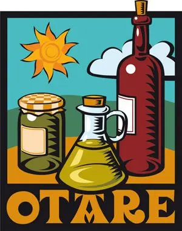

OTARE
Otare es una marca de la distribuidora LAKET, con sede en Estella, que reúne una selección cuidadosamente elaborada de materias primas provenientes de productores locales de la región.
Sus productos destacan por un proceso de elaboración artesanal, con una mínima transformación, que garantiza la máxima calidad y un cuidado especial en cada detalle. Además, Otare apuesta por la agricultura ecológica, respetando el entorno y ofreciendo alimentos auténticos y naturales.